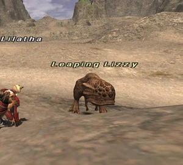

Level 75 reference · Zenith rules
|
Job: Notorious Monster |
 |

|
Zone |
Level |
Drops |
Steal |
Spawns |
Notes |
|
10-11 |
|
1 |
L, H | ||
HP = Detects Low HP; M = Detects Magic; Sc = Follows by Scent; T(S) = True-sight; T(H) = True-hearing JA = Detects job abilities; WS = Detects weaponskills; Z(D) = Asleep in Daytime; Z(N) = Asleep at Nighttime | |||||

Notes:
- Lottery Spawn from the Rock Lizards around South Gustaberg E-8 - F-8.
- Respawn time varies greatly-- As low as 5 minutes, to more than 4 hours. Average spawn appears to be around 2 hours.
- Killable by: Solo at level 15.
- When using Widescan, look for the three groups of five lizards in the area. First list is centralized East of the large pillar, second group is West, and third group is Northwest. Leaping Lizzy will appear as the fifth lizard in one of the first two groups. After killing Leaping Lizzy in one area she may be the next pop in the other area.
- The respawn time for individual Rock Lizards is 2:10 (Vana'diel time), or 5 minutes real time, with a pop window of 30 seconds or so.
Eden Notes:
- 2 sets of PH as above.Spawn time is as RNG as can expect from DSP.
- Can spawn anywhere, independent of which PH was chosen to spawn Leaping Lizzy.
Adapted from Eden Wiki: Leaping Lizzy · Contributors and history · CC BY-SA 4.0. Revision 46823. Layout, links and optional background text adapted for Zenith.